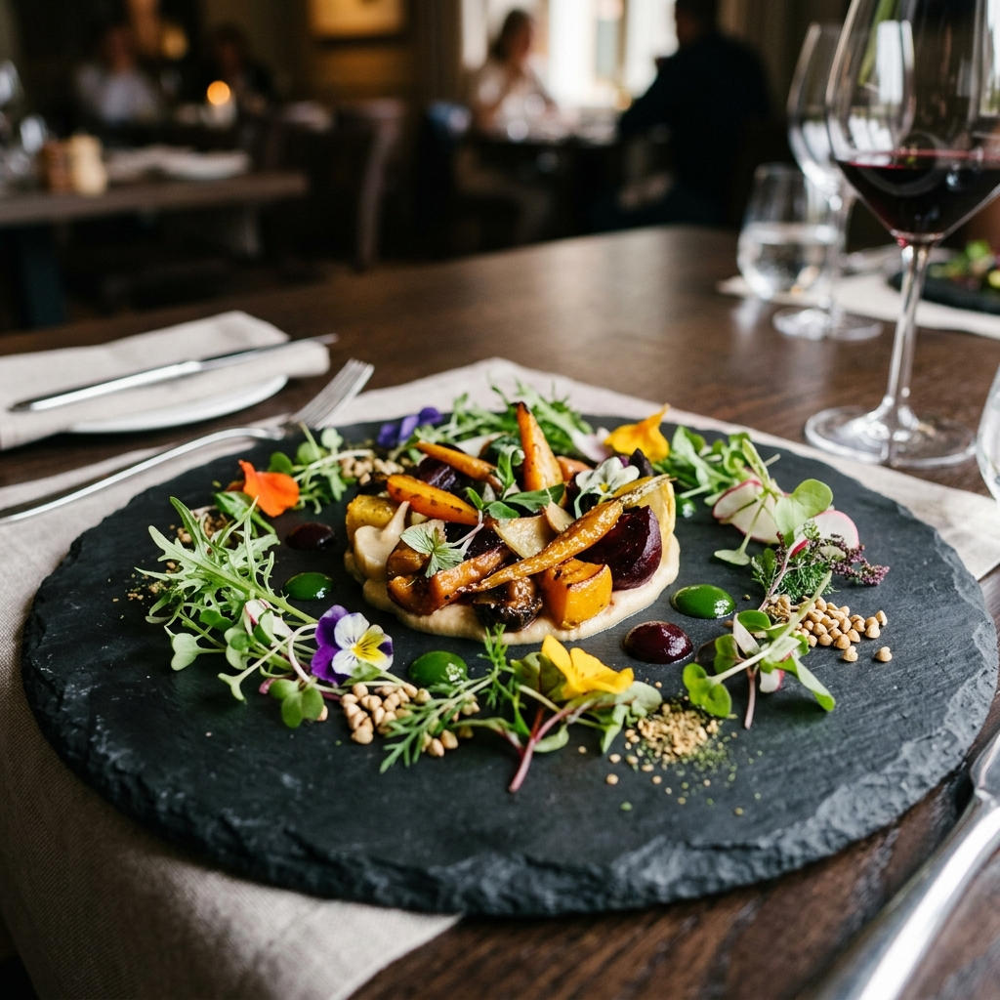
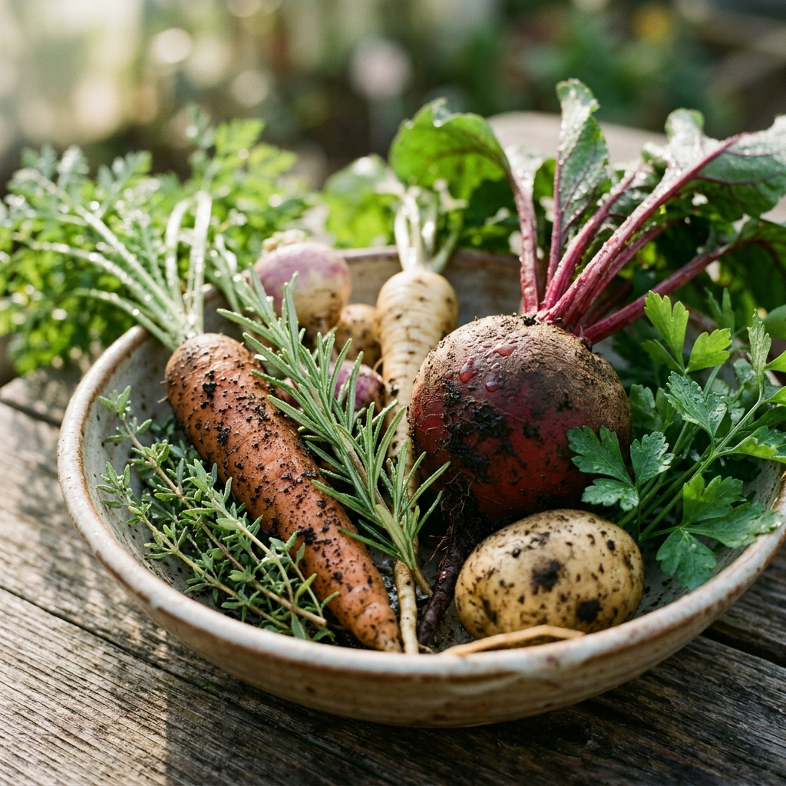
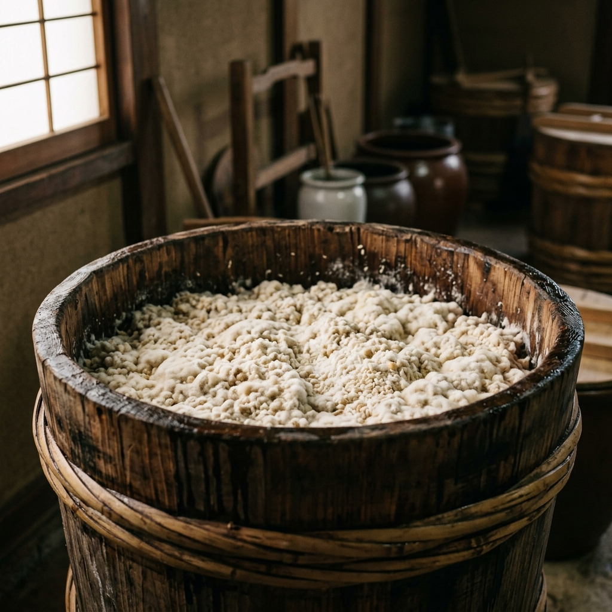
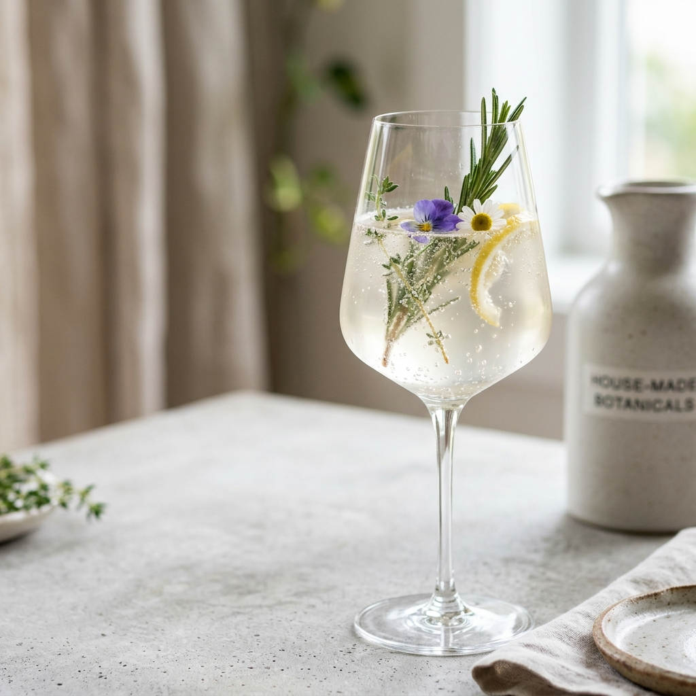
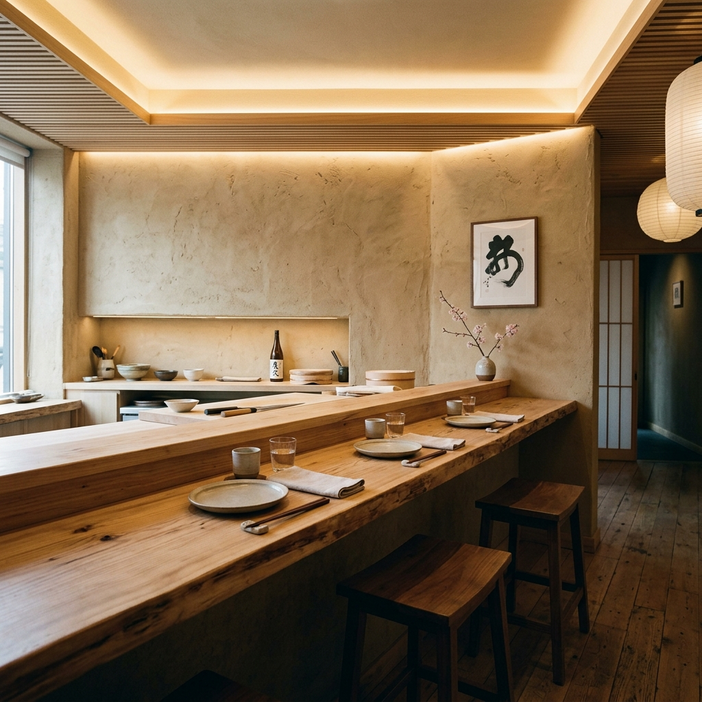
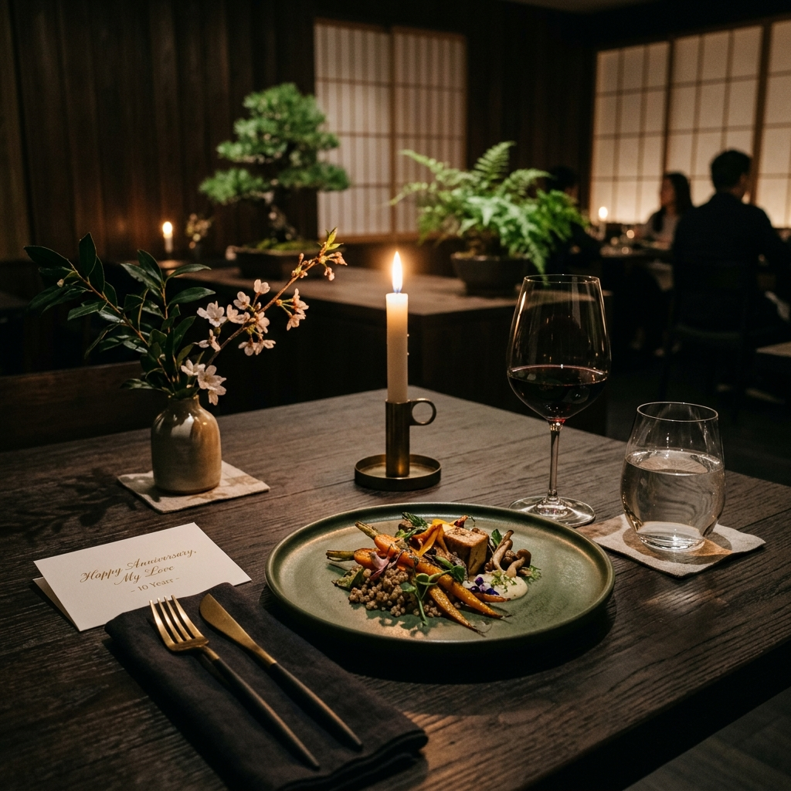
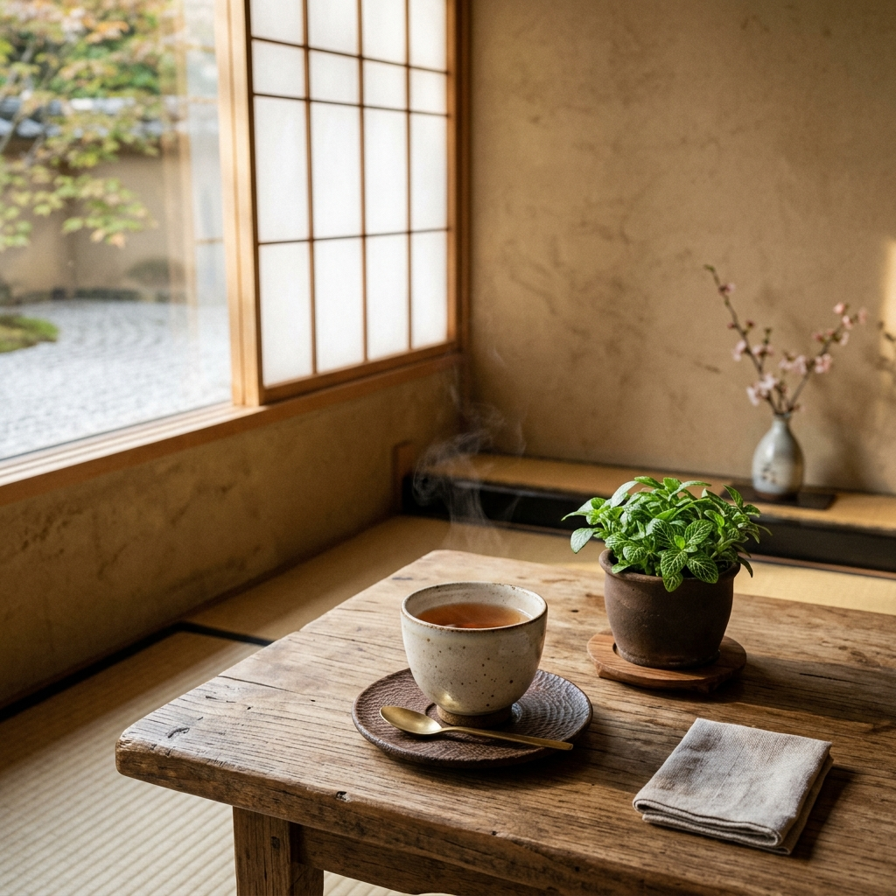
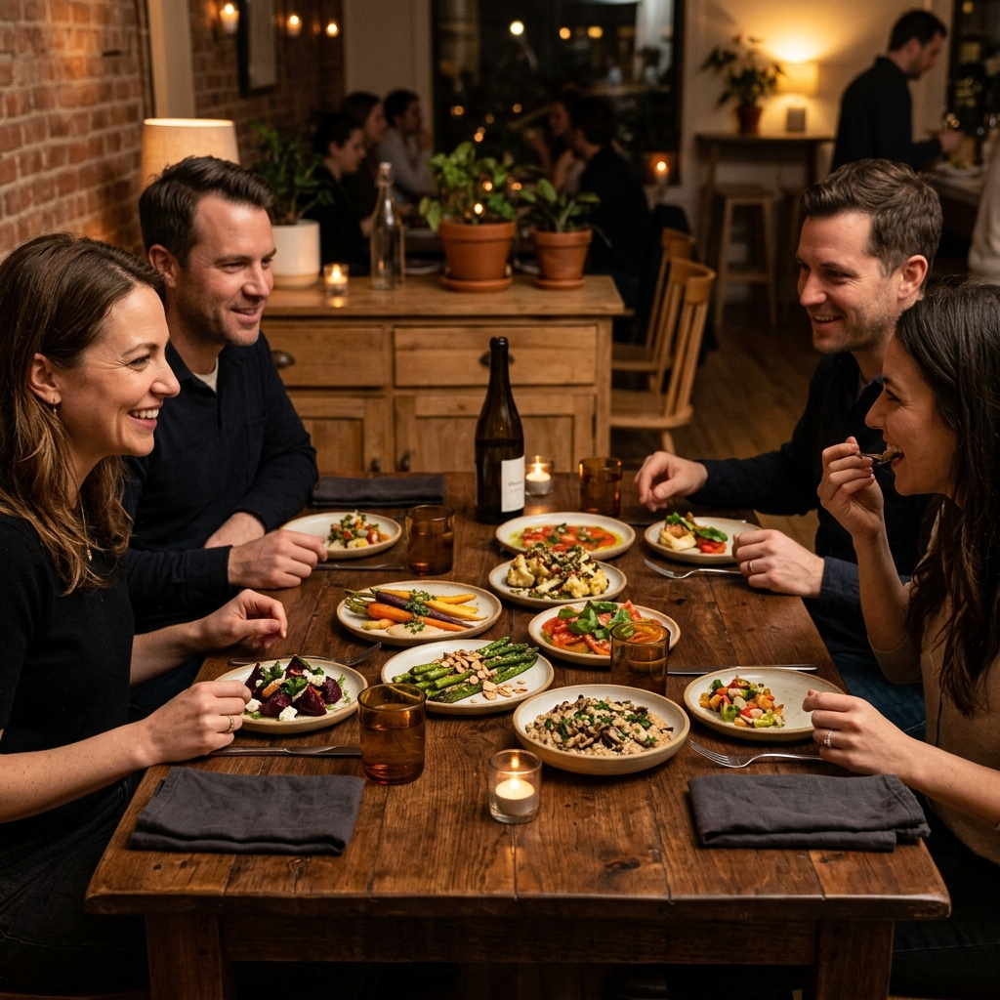

nōe
動物性食材を一切使用せず、愛媛の有機野菜と自家製発酵調味料で仕上げるイノベーティブ・キュイジーヌ。心と身体を優しく整えるひとときをお届けします。

自然の循環に身を委ね、
内なる感覚を呼び覚ます。
当店では、肉や魚、乳製品をはじめとする動物性食材を一切使用いたしません。
主役となるのは、愛媛の契約農家が土づくりからこだわって育てた、生命力あふれる有機野菜や山野草。
これらに、伝統的な木桶で醸された味噌や醤油、自家製の米麹発酵調味料を掛け合わせることで、驚くほど深く豊かな味わいを引き出します。美味しいだけでなく、食べた翌朝に身体が軽くなるような、そんな「調律」の食体験をご提案いたします。
3つの調律

Soil / 大地とつながる有機野菜
愛媛の豊かな自然のもと、無農薬・無化学肥料で育てられた力強い野菜たち。その根や葉、皮に眠る大地のエネルギーと生命力を、余すことなく一皿に表現します。

Fermentation / 伝統と自家製麹の調和
木桶で数年かけて醸された味噌や醤油、そして店内で仕込む自家製の発酵液。目に見えない微生物の働きを借りて、素材の旨味とコクを幾重にも重ね合わせます。

Experience / 五感を研ぎ澄ます食体験
繊細な盛り付け、器の質感、精度高くお食事に寄り添う自家製発酵ドリンクのペアリング。味覚だけでなく、すべての感覚で楽しむ新しいイノベーティブ料理です。
アラカルト
愛媛の自然の恵みと発酵の妙を、一皿からお愉しみいただける単品メニューです。
Appetizer / 前菜
-
有機野菜のテリーヌ 自家製甘酒味噌ソース ¥1,800
大地の力強い味わいを凝縮した野菜に、甘酒の優しい甘みと味噌の塩気が調和します。
-
山野草とハーブの発酵サラダ ¥1,600
愛媛の新鮮なハーブを、数ヶ月発酵させた自家製発酵液の特製柑橘たれで。
-
季節の根菜と米麹のポタージュ ¥1,200
じっくりローストして甘みを引き出した旬の根菜に、米麹のコクを加えた温かいスープ。
-
ぬか漬けと豆腐の燻製カプレーゼ ¥1,400
桜チップで燻製にした自家製豆腐と有機トマト、古式豊かなぬか床の漬物を合わせて。
Main Dishes / 温菜・主菜
-
原木椎茸とソイミートのステーキ ¥2,800
肉厚な原木椎茸と大豆ミートを香ばしく焼き上げ、木桶諸味の深い旨味を利かせたソースで。
-
旬野菜と湯葉のオーブン焼き ¥2,400
地産の冬野菜と引き上げ湯葉を、優しく甘い麦味噌仕立ての豆乳ベシャメルソースで。
-
発酵発芽玄米のリゾット 季節のトリュフ ¥3,200
発芽玄米を酵素と発酵させ、ナッツミルクと麹で炊き上げました。黒トリュフを削ります。
Dessert & Drink / デザート & 発酵茶
-
豆乳と酒粕のブランマンジェ ¥1,000
大島産銘酒の酒粕と濃厚豆乳を合わせ、クリーミーに仕上げました。季節の柑橘添え。
-
自家製麹のヴィーガンショコラテリーヌ ¥1,200
麹で醸された上品な甘みと、最高品質のカカオが溶け合う濃厚かつ体に優しいテリーヌ。
-
果実とハーブの発酵コンブチャ ¥900
店内でじっくり二次発酵させた自家製の紅茶キノコ。爽やかな酸味と繊細な泡立ち。
-
無農薬柑橘と和薄荷の酵素ソーダ ¥850
愛媛の有機みかんと和薄荷を発酵させて作った、自家製酵素シロップの炭酸割り。
五感を休め、食と対話する

木と土、そして左官職人の手仕事による壁。五感を休め、目の前の一皿と静かに向き合えるノイズレスな空間です。
カウンター6席ではシェフの繊細な手仕事を間近で愉しむことができ、テーブル席や個室は大切な方との語らいに最適です。
このような時にお勧めします

特別な記念日に
体に負担のない美しい料理と特別な空間で、大切な人との記憶に残る贅沢な時間を演出いたします。

心身のリセットに
日常の喧騒から離れて五感を研ぎ澄まし、滋味深い料理で内側から健康を整えるセルフケアの時間を。

多様な食卓の共有
ヴィーガンやベジタリアン、アレルギーをお持ちの方も、同じテーブルで妥協のない美食の感動を共有できます。
お客様の声
“「動物性のものを一切使っていないと聞いて驚きました。どのお皿も素材の旨味と発酵のコクが幾重にも重なり、これまでにない深い感動を覚えました。」
30代・女性
“「普段は肉料理を好む私ですが、nōeさんのイノベーティブ料理は旨味の満足感が素晴らしく、翌朝の胃の軽さに感動して定期的にリピートしています。」
40代・男性
“「松山にこんなに洗練されたプラントベースのお店ができたのが本当に嬉しいです。アレルギーを持つ友人も、心から安心しておいしいディナーを楽しめました。」
20代・女性
よくある質問
Q ヴィーガンやアレルギーへの対応はどこまで可能ですか？
当店の料理はすべてプラントベース（動物性食材不使用）です。グルテンフリーや特定の食物アレルギーについては、ご予約時に詳細をお知らせいただければ、可能な限り個別に対応させていただきます。
Q 当日の予約は可能ですか？
食材の仕込みや発酵の調整に時間を要するため、完全予約制とさせていただいております。ディナーは前日まで、ランチは当日10:00までにご予約をお願いいたします。
Q ドレスコードはありますか？
特に厳しいドレスコードはございませんが、空間の雰囲気に合わせてスマートカジュアルを推奨しております。
店舗情報・アクセス
- 店名
- nōe (ノエ)
- 住所
- 〒790-0004 愛媛県松山市大街道 3-X-X
（松山城ロープウェイ街・東雲神社付近） - 電話番号
- 089-9XX-XXXX
- 営業時間
-
ランチ：11:30 〜 14:30 (L.O. 13:00)
ディナー：18:00 〜 22:00 (L.O. 20:00) - 定休日
- 月曜日（祝日の場合は翌火曜日が振替休日となります）
- 駐車場
- なし（近隣のコインパーキングをご利用ください）
ご予約・お問い合わせ
完全予約制となっております。事前のご予約をお願いいたします。